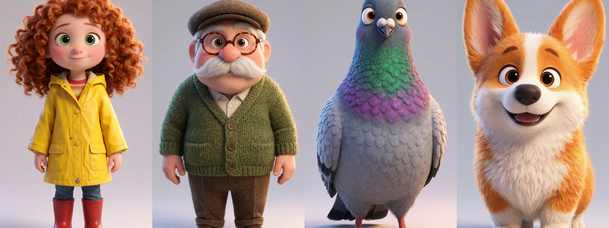
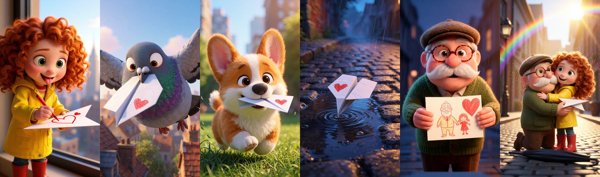

How I would make your story ad.
Seven steps, each shown on my own work. PAPERWING is my 3D animated piece for a fictional brand. The drama is a 5 minute client ad.
-
Script into a shot list
Written with Claude and Gemini, using only claims from your product page. Each line says what we see, what is said and how long it holds. My 5 minute drama was 75 shots, so a 6 minute ad is about 95.
-
Lock the characters
Character sheets in Krea 2. You approve these before anything moves, because every later shot is built from them. On a transformation story, the before and after each get a sheet.

The locked PAPERWING cast -
Every shot as a still
Krea 2 and Qwen Image Edit, with the character sheet as the reference. PAPERWING had four takes per shot and I kept the best. Inside-the-body shots are built the same way.

Six of the 17 chosen stills, same faces throughout -
Animate each still
LTX 2.5 and MiniMax H3 on my RTX 4090, with Kling 3.0 or Veo for shots that need more. A rejected shot goes back and gets generated again.
How PAPERWING was made, 12 seconds -
Voices and lip sync
Voices in ElevenLabs, with lip sync on the talking shots. The drama has three characters, a voice for each and every line lip-synced. PAPERWING is music only, so this step is shown on the drama.
Scenes from the drama, 55 seconds, in Italian -
Your product as a 3D model
I rebuild it at real size from your photos and label artwork, then use it as the reference for every product shot. AI never writes the label text. Drag the model to turn it.

Original shot, then delivered with the client's product -
Edit and check
Edit in Premiere Pro with highlighted captions, music and sound effects. Then I check every caption against the audio, every shot for errors in hands, faces, mouths and labels, and every claim against your product page. You see it after that.